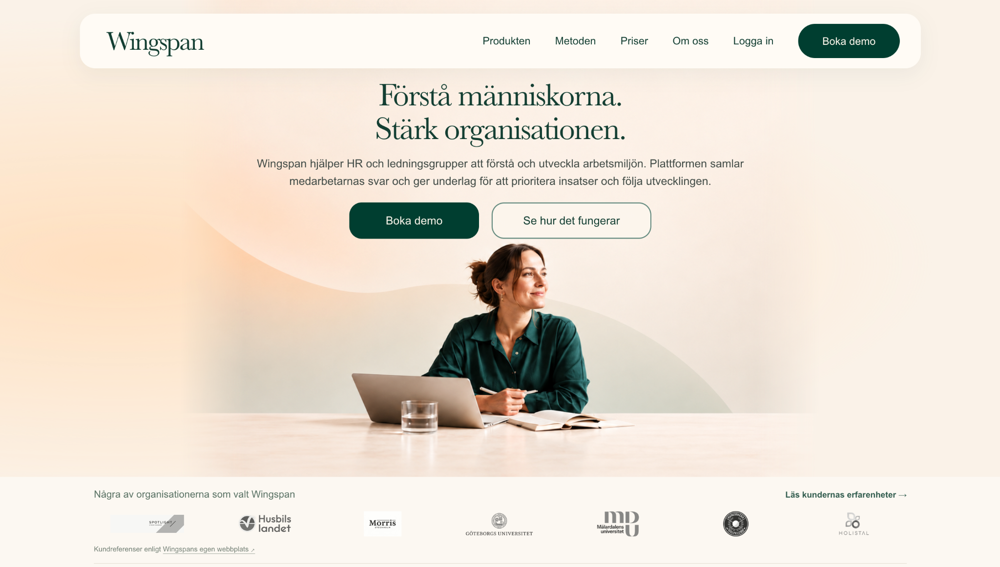
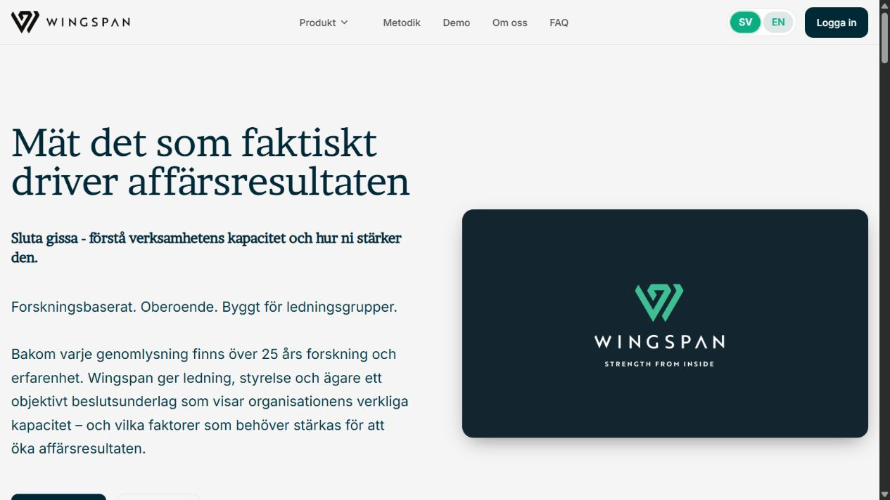
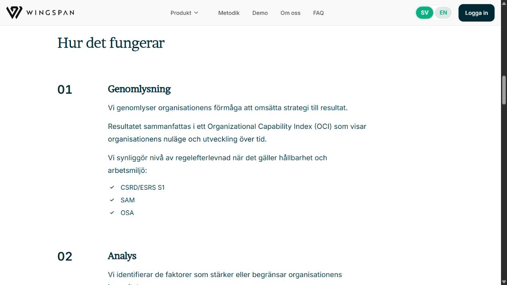
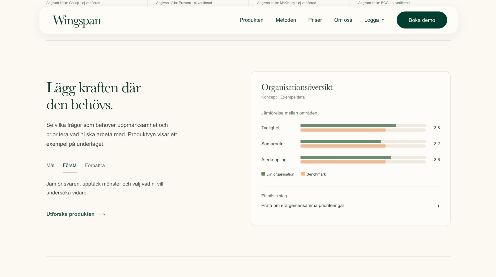

PÅGÅENDE KONCEPT • WEBBREDESIGN
Wingspan
Sedan våren 2026 arbetar jag tillsammans med två andra designers direkt med Wingspan på en redesign av webbplatsen. Intervjuer, research och löpande dialog med företaget ligger bakom våra prioriteringar kring informationshierarki, innehåll och visuellt uttryck.

Uppdrag & roll
Arbetet sker utanför skolan och omfattar hela webbplatsen: första intryck, navigation, innehåll och hur produkten och metoden förklaras. Vi är tre designers och stämmer löpande av riktningar direkt med Wingspan.
Utmaningen är att förklara ett forskningsbaserat och komplext erbjudande utan att göra det tungt att ta till sig. En ny besökare behöver snabbt förstå vad Wingspan gör, för vem och varför det är relevant.
Utgångsläget
Intervjuer och research gav oss underlag för att se var kommunikationen behövde bli tydligare. Den tidigare webbplatsen innehöll mycket relevant information, men långa textpartier och flera budskapsnivåer gjorde det svårt att snabbt få en överblick.
Vi landade därför i en tydligare läsordning: först förstå erbjudandet, sedan få en enkel bild av hur det fungerar och därefter kunna fördjupa sig.

Tydligare hierarki
Målet var inte att skala bort innehåll, utan att ändra ordningen. Vi arbetade med kortare ingångar, tydligare rubriknivåer och mer luft så att helheten blir begriplig innan detaljerna tar plats.
Metoden var ett tydligt exempel. Den tidigare versionen bestod av flera längre steg med mycket text. Vi tog fram en trestegsmodell som ger överblick först och låter detaljerna komma senare.

Samarbete och visuella beslut
Designen har utvecklats tillsammans i gruppen och i löpande dialog med Wingspan. Vi har utgått från intervjuer, research och företagets varumärkesdokumentation, men justerat bland annat färg, typografi, bildspråk och ytor för att göra webbplatsen tydligare och mer inbjudande.
För mig har projektet framför allt handlat om att balansera verksamhetens behov med tydlighet för besökaren. När erbjudandet är komplext får små beslut kring ordning, formuleringar och visuell hierarki stor betydelse.
Trestegsmodellen
Trestegsmodellen växte fram ur intervjuerna, researchen och arbetet med innehållsstrukturen, och var en lösning som Wingspan uppskattade särskilt. Den ger en snabb överblick över processen medan den mer detaljerade informationen kan ligga längre ner på sidan.

Pågående arbete
Projektet pågår fortfarande tillsammans med Wingspan. Bilderna här visar delar av vårt konceptarbete och kan därför skilja sig från den version som ligger live idag.
Se Wingspan idag